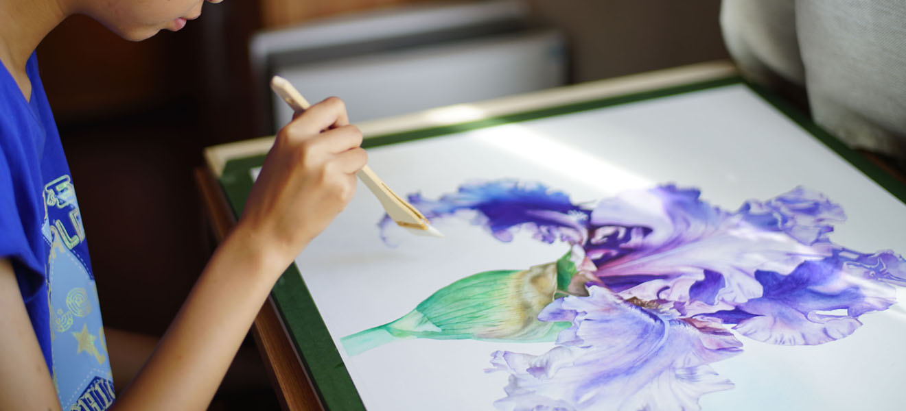

My painting stories
Painting is a hobby that I have persisted for many years. From childhood graffiti, painting classes in kindergartens and elementary schools, to self-study after catching up with color lead before elementary school, joining QQ group exchanges, and later watercolors... busy learning and living, painting calmed me down Come, experience the beauty in the painting process, and paint the beauty with a brush.
画画是我坚持了多年的一项爱好。从小时候的涂鸦，幼儿园、小学期间的绘画班，再到小学毕业前迷上彩铅后的自学，加入QQ群交流，以及再后来的水彩……忙碌的学习生活之余，绘画让我静下心来，在绘画过程中体会美，用画笔描绘美。
看到照片里一朵美丽的花，在阳光下舒展柔嫩的花瓣，色彩华丽地过渡，圆润的花型完美无缺。这朵花就像生活的缩影，斑斓的色彩正等待我的描绘，我的心中也对即将绘制的画充满激动和期待。
选好颜色，我在紧张与激动中小心地握着笔，努力让颜色恰到好处地勾出花朵极富动感的精妙脉络。笔尖划过纸张的沙沙声中，我似乎看到了脑海里美丽的构思和期盼在我的努力下化作美丽的色彩从笔尖流出，一点点描绘着花朵美丽的样子。
终于，我完成了花朵面向阳光的花瓣，回想刚才的努力终于成功描绘出这栩栩如生的花朵，我心中充满了满足。该画暗处的花瓣了，这却令我有些困惑。一些花瓣虽然在暗处，却仍然轻盈透亮，这种质感的表现成了难题，可想到这是为了描绘这样美丽的花朵，思考我也乐在其中。忽然，我想到可以在彩铅下先画上一层水彩，这样再画深色彩铅，既灵动，又够深。马上可以成功，我却有些释然了，毕竟成功与否，都是在花朵上留下了美丽的色彩。就像在生活中一样，只要努力了，思考了，不管结果如何，都是生活中美好的记忆。
看着完成的画，明亮的花瓣在阳光下舞蹈，暗处的花瓣沉稳地为画面增添一份质感，整朵花儿像公主一样高傲而沉静，也让我感到成功与满足。回想绘画过程中，开始时的期盼与完成时的轻松，成功时的满足或是困难时的困惑都成为我美好的记忆。我希望我能随时静下心来，不光用画笔描绘生活之美，也要在生活中随时体会生活之美。
With my Lithops
Lithops, a kind of succulent plant that grow in arid southern Africa desert, got this name from their stone-like appearance. Their seeds were small like dust, it takes tears for them to grow from a small green sprout into a adult plant. Watching this progress really tests one’s patience and I find it very interesting.
My small rose garden
我家一个小院，这里是我种植花卉的小天地，当我在网上浏览那些美丽的欧洲月季的时候就想，月季有这么多品种，把月季作为市花的北京，街边的月季怎么就那么单调呢？于是从网上订购多种月季种苗，开始了我的月季种植历程。施肥、除虫，看着小花园各种月季盛开，心里充满满足与成就感。
Our house has a small backyard which is my own little world made up of flowers. When I browsed the internet, I saw so many beautiful pictures of the diversified, gorgeous European roses. That was when I decided to create a rose garden of my own. So I ordered a variety of rose seedlings on the internet and began my rose planting career of fertilizing, watering, bug killing, and pruning. The garden becomes better day by day, and I always feel satisfied when I can cut a bunch of flowers and put them in a vase to decorate my room.